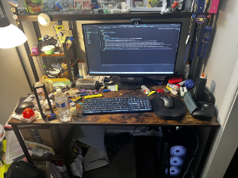

project -

a recreation of my desk in late 2024 in the desmos 3D graphing calculator, made for the 2025 desmos art expo.
i didn't know much about any artistic graphing beforehand, but this was an eye-opener and a pretty fun project over the winter.
it didn't win, but it was my first time doing anything of this scale, so it was expected. thanks to my friends and my algebra 1 teacher for encouraging me over the duration of the event!
i would say that making this graph was pretty interesting. i actually skipped almost all of the details on my desk to complete it in time (i only started two months before the deadline),
so my actual desk is MUCH messier than what the graph shows. i also used to have a really old 1.6ghz 8gb ram dell inspiron as my computer (which i almost never used because it was slower than a snail in molasses
and chock full of browser hijackers), which i assumed would be hard to graph. thankfully enough, i switched to my current pc which is much easier to represent. i took pretty good care to include my ds lite in there,
although it's missing my 3ds because my first one was stolen a few months prior (it's been replaced now). the mouse isn't there because it was the last detail and i forgot to save before submitting.
the action-figure-like thing is an hg shenlong gunpla model. i forgot why i included it considering how long it took to add. that model did win 2nd prize in a competition once, but that was because the competition only had two participants.
overall, it was still a very fun event. i think that all of the actual winners deserved their places (especially miles gupta's desmos poker, i spent too much time learning how to CRUSH the bot). i was actually
planning to participate again in 2025, but things happened and i couldn't get to it. i'm planning on submitting my next graph... whenever it's done. i'd really recommend participating in the art expo if you're into math in any way.

a photo of my actual desk, as of early 2026. you can see the origins of a bunch of parts in the graph here.